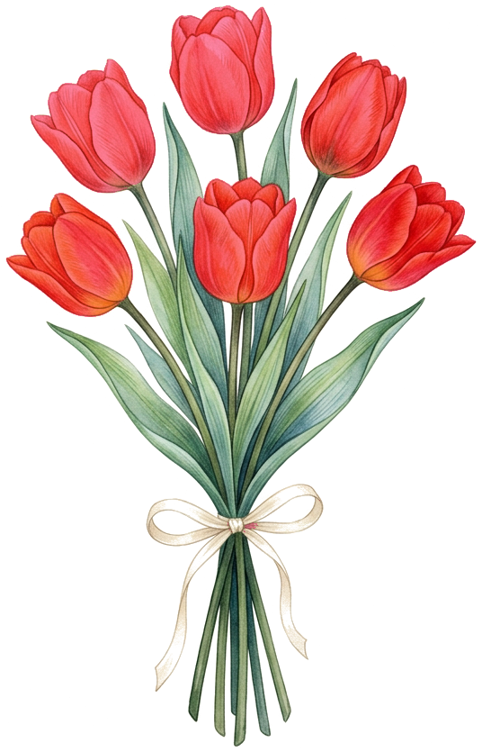

<!doctype html><html><head><meta charset="utf-8">
<style>
@font-face{font-family:"Sacramento";src:url("fonts/sacramento.ttf")}
@font-face{font-family:"Caslon";src:url("../site/assets/fonts/LibreCaslonText-Regular.ttf")}
body{margin:0;background:#333}
.post{width:1080px;height:1350px;position:relative;overflow:hidden;margin:0 0 20px}
.post svg{position:absolute;inset:0}
.fundo{position:absolute;left:0;top:-135px;width:1080px;height:1620px;object-fit:cover}
.texto{position:absolute;left:170px;width:730px;top:618px;text-align:center;font-family:"Sacramento";font-size:70px;line-height:1.12;transform:rotate(-2deg);-webkit-text-stroke:.7px currentColor}
.texto .ref{display:block;margin-top:14px;font-size:62px}
.buque{position:absolute;filter:drop-shadow(0 8px 10px rgba(50,25,15,.28))}
.tag{position:absolute;left:50%;top:92px;transform:translateX(-50%) rotate(-2deg);font-family:"Caslon";font-size:17px;letter-spacing:.26em;padding:13px 26px 12px}
</style></head><body>
<script>
// Bilhete em envelope kraft sobre as flores em saquinhos (imagem que o Victor mandou).
const V = [
  { fundo:"referencias/saquinhos-flores-aquarela.jpg", tinta:"#7A4A3A", coracao:"#B3302B", topo:0 },
];
function post(id, c){
  return `<div class="post" id="${id}">
  
  <svg viewBox="0 0 1080 1350" width="1080" height="1350">
    <defs>
      <filter id="${id}-papel" x="0" y="0" width="100%" height="100%">
        <feTurbulence type="fractalNoise" baseFrequency=".035" numOctaves="4" seed="3" result="n"/>
        <feColorMatrix in="n" type="matrix" values="0 0 0 0 .45  0 0 0 0 .32  0 0 0 0 .2  0 0 0 .35 0" result="m"/>
        <feComposite in="m" in2="SourceGraphic" operator="in"/>
      </filter>
      <filter id="${id}-borda" x="-5%" y="-5%" width="110%" height="110%">
        <feTurbulence type="fractalNoise" baseFrequency=".09" numOctaves="2" seed="8" result="t"/>
        <feDisplacementMap in="SourceGraphic" in2="t" scale="9" xChannelSelector="R" yChannelSelector="G" result="d"/>
        <feDropShadow in="d" dx="4" dy="10" stdDeviation="10" flood-color="#3b2416" flood-opacity=".35"/>
      </filter>
      <filter id="${id}-sombra" x="-10%" y="-10%" width="120%" height="120%">
        <feDropShadow dx="3" dy="9" stdDeviation="9" flood-color="#3b2416" flood-opacity=".3"/>
      </filter>
      <filter id="${id}-pincel" x="-10%" y="-10%" width="120%" height="120%">
        <feTurbulence type="fractalNoise" baseFrequency=".6" numOctaves="2" seed="5" result="t"/>
        <feDisplacementMap in="SourceGraphic" in2="t" scale="4" xChannelSelector="R" yChannelSelector="G" result="d"/>
        <feTurbulence type="fractalNoise" baseFrequency=".04 .5" numOctaves="2" seed="9" result="s"/>
        <feColorMatrix in="s" type="matrix" values="0 0 0 0 0  0 0 0 0 0  0 0 0 0 0  0 0 0 -.45 1.12" result="sa"/>
        <feComposite in="d" in2="sa" operator="in"/>
      </filter>
      <filter id="${id}-grao" x="0" y="0" width="100%" height="100%">
        <feTurbulence type="fractalNoise" baseFrequency=".9" numOctaves="2" seed="2"/>
        <feColorMatrix type="saturate" values="0"/>
        <feComponentTransfer><feFuncA type="linear" slope=".05"/></feComponentTransfer>
      </filter>
    </defs>
    <!-- envelope kraft, aberto, atrás do bilhete -->
    <g transform="rotate(-5 545 620)" filter="url(#${id}-sombra)">
      <path d="M205,455 L545,212 Q560,202 575,212 L895,455 Z" fill="#CDB08A"/>
      <path d="M205,455 L545,212 Q560,202 575,212 L895,455 Z" fill="#000" filter="url(#${id}-papel)"/>
      <path d="M205,455 L545,212 Q560,202 575,212 L895,455" fill="none" stroke="#a88a63" stroke-width="2"/>
      <rect x="200" y="452" width="700" height="430" rx="6" fill="#C4A57C"/>
      <rect x="200" y="452" width="700" height="430" rx="6" fill="#000" filter="url(#${id}-papel)"/>
    </g>
    <path d="M0,-34 C-18,-62 -62,-56 -62,-18 C-62,14 -26,38 0,62 C26,38 62,14 62,-18 C62,-56 18,-62 0,-34 Z"
          transform="translate(470 352) rotate(-9)" fill="${c.coracao}" filter="url(#${id}-pincel)"/>
    <!-- bilhete com borda rasgadinha -->
    <g transform="rotate(-2 535 760)">
      <rect x="168" y="572" width="734" height="408" fill="#F2EADD" filter="url(#${id}-borda)"/>
      <rect x="168" y="572" width="734" height="408" fill="#000" filter="url(#${id}-papel)" opacity=".55"/>
    </g>
    <path d="M0,-30 C-16,-56 -56,-50 -56,-16 C-56,12 -24,34 0,56 C24,34 56,12 56,-16 C56,-50 16,-56 0,-30 Z"
          transform="translate(826 896) rotate(8)" fill="none" stroke="${c.coracao}" stroke-width="11" stroke-linejoin="round" filter="url(#${id}-pincel)"/>
  </svg>
  <div class="texto" style="color:${c.tinta}">Pois sabendo que o<br>Senhor estava comigo,<br>criei coragem.<span class="ref">Esdras 7:28</span></div>
  
  <svg viewBox="0 0 1080 1350" width="1080" height="1350" style="pointer-events:none"><rect width="1080" height="1350" filter="url(#${id}-grao)"/></svg>
  <div class="tag" style="color:#4A2C1E;background:#D9C09A;box-shadow:0 4px 10px rgba(59,36,22,.3)">@REBECAFORTUNATO__</div>
</div>`;
}
document.body.insertAdjacentHTML("beforeend", V.map((c, i) => post("p" + (i + 1), c)).join(""));
</script>
</body></html>
